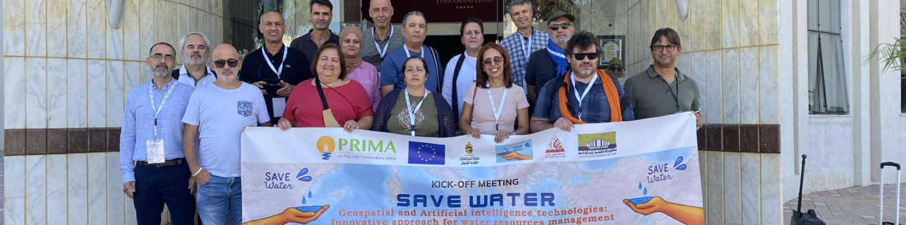

Establishment of a water system database, including Living Lab data gathering and already existing data adapted for the Mediterranean area.
Project
About SAVE Water
GeoSpatial and Artificial intelligence technologies: InnovatiVE approach for water resources management.
Ensuring the different human water needs in the context of climate change constitutes a great challenge, especially in the Mediterranean area. In regions with a dry climate and overexploited water systems, sustainable water management is imposed. The amount of data related to water management is growing, so bringing new opportunities offered by Artificial Intelligence and Geospatial technologies can improve the efficiency of water management policies by processing data, optimising water supply services and gathering all stakeholders.
This is the overall objective of the SAVE water project: a 36-month Research and Innovation Action (RIA) directly related to PRIMA Topic 2.1.1 on effective water accounting approaches under crisis conditions. The initiative strengthens crisis management with early warning systems and resilience strategies, aiming to address complex water issues collaboratively for long-term sustainability, supported by an interdisciplinary team from nine Mediterranean and European countries.
The SAVE Water Team

Specific Objectives
Development of an intelligent system based on real-time monitoring of water systems and predictive models.
Modelling the impact of land use and climate changes on hydrological systems via models based on remote sensing.
Establishment of a locally adapted vulnerability model for the prevention and protection of highly at-risk water systems.
Analysis of the socio-economic and environmental impacts and proposing sustainable pricing and insurance strategies against water scarcity and external shocks.
Development of a collaborative platform involving all water system stakeholders using a participatory approach, and out-scaling the SAVE water innovative approach through communication, dissemination and exploitation plans.
Monitoring Network
Schematic illustration — monitoring network across the Mediterranean and European areas covered by the SAVE water consortium, from Tunisia, Morocco and Algeria to Egypt, Italy, France, Spain, Portugal and Germany.